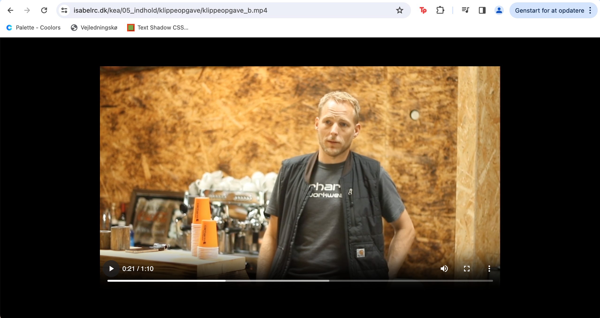
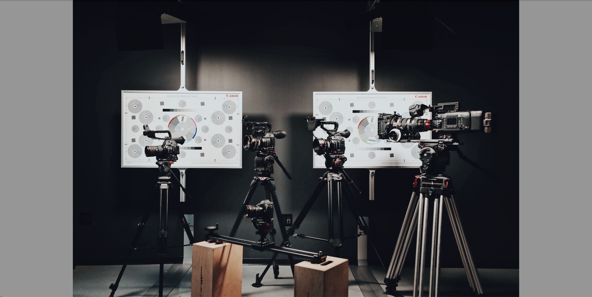
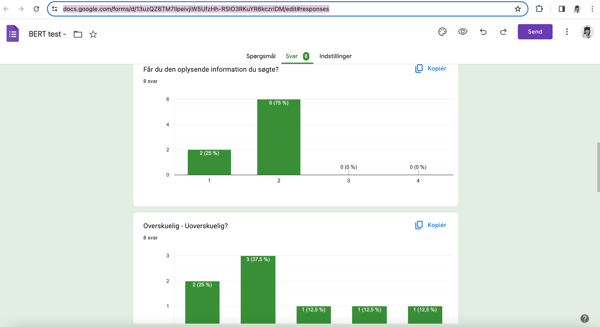

Tema 5 - Indhold
Temabeskrivelse
Temaet varede 4 uger, hvor den første 1 1/2 uge lærte vi grundlæggende optagelse samt redigering af video i Premiere Pro og kode et site med video. I begyndelsen fik vi noget videomateriale "Carhartt videoer", hvor vi kunne øve os i redigering i Premiere Pro. Målet var at lave et "Videosite" med materiale vi selv har optaget. Det skulle inkludere et interview af en person, der beretter om sin passion med en varighed på 60 sek. I løbet af processen kiggede vi også på team roles og group formation. I denne forbindelse blev vi introduceret for Basadur profile, Ponytails Propheads & Suits metoden og Belbins test, som kunne bruges som værktøjer til at danne en dynamisk gruppe. Til sidst udfyldte vi et Team Canvas for at få et overblik over hvilke roller, som skulle uddeles, værdier og mål. I forløbet fik vi også en mere dybdegående guide til GitHub og GitHub Pages, hvor vi tilkoblede VisualCode til Github så man kunne initialize sine repositories.
De sidste 2 1/2 uge blev vi introduceret for grundlæggende faglige begreber inden for video og fotoproduktion, og derefter benyttede vi de færdigheder, som vi har fået i de foregående temaer til at løse "Virksomhedssite" opgaven. Formålet var at producere nyt layout, fotos og video til en virksomhed samt redesigne deres nuværende hjemmeside.
Hvad har jeg tilegnet mig?
Afleveringer
Proces - Video og Virksomhedssite
Klippeopgaver
Tech & Story Lab
 05.05.01 Videosite
Vi startede med klippeopgaverne, som indledte introduktionen til Premiere Pro. For mit vedkommende var det første gang, at jeg redigerede i dette program. Jeg lærte at oprette nye projekter, importere videofiler, flytte filerne fra Project Panel til Timeline, cutte i klippene og eksportere til webM. Ydermere lærte jeg om motion graphics (fx. rulletekser), b-roll klip og establishing shot. Derudover lærte jeg også at implementere et videotag i HTML. Dernæst kiggede vi på filmeteknikker fx. 5-skudsreglen, der inkluderer et totalbillede, halvtotal, nærbillede, over-the-shoulder og et point of view klip. I forløbet besøgte vi Tech & Story Lab, hvor min gruppe og jeg lånte lys, stativer, kamera og mikrofon til at få det bedst mulige indhold til både videosite-og virksomhedssopgaven.
Research & test
Trello-board
05.02.01 Virksomhedssite - Research/Test & Trello
Efter jeg og min makker havde afleveret Videosite-opgaven, så kunne min gruppe og jeg begynde med at finde en virksomhed. Her oplevede vi udfordringer i og med, at svar-tiden kunne være ret lang eller så forlangede en virksomhed, som vi fik kontakt til, at vi skulle stå for hele deres hjemmeside og kom med diverse ønsker. Det kom vi hurtigt ud af igen, og til sidst fandt vi cocktailbaren "Citizen" lokaliseret inde i Indre By. Vi besluttede os for denne, da deres hjemmeside blot var en one-page. Dernæst lavede vi en BERT (Bipolær Emotionel Respons Test) på hjemmesiden, så vi fik et udgangspunkt til hvilke fokusomårder, der kunne forbedre et redesign. Eksempelvis fandt vi ud af, at langt de fleste testpersoner ikke fik den information de søgte, at sitet var grimt, utroværdigt og af lav kvalitet.
Vi blev herefter introduceret til Trello - en måde at
noget
Pecha Kucha
05.05.01 Videosite
"Citizen CPH", som er en cocktail i indre by. Min rolle var [indsæt din hovedrolle og ansvarsområder], som jeg udførte [specifik måde med specifikke værktøjer eller metoder] (færdighed). Det lærte mig vigtigheden af [værktøj/metode], som jeg senere brugte i [fremtidigt projekt eller videreudvikling]. Udviklingsprocessen kan ses i [illustrationer eller visualiseringer] i figur 1 (kompetence). Det sværeste var [svar], som jeg derfor var ekstra opmærksom på at blive bedre til i [øvelse/opgave/projekt] (link) sidst på semesteret